№1. Нужно зарегистрироваться на github если вы уже зарегистрированы переходим к шагу №2.
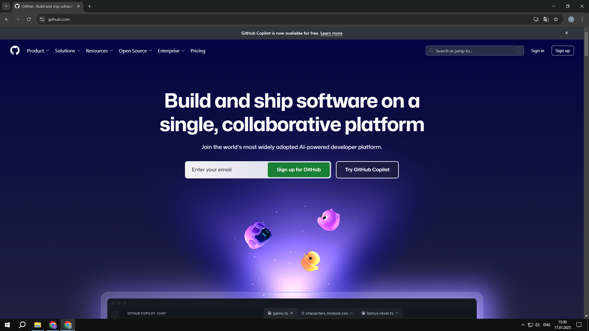№2. Создать репозиторий.
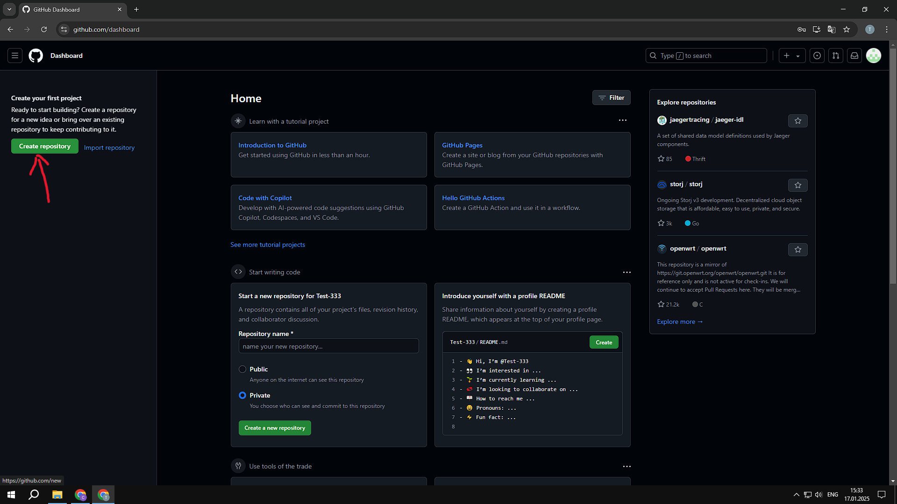№3.Укахать имя репозитория и поставить галочку напротив "Public".
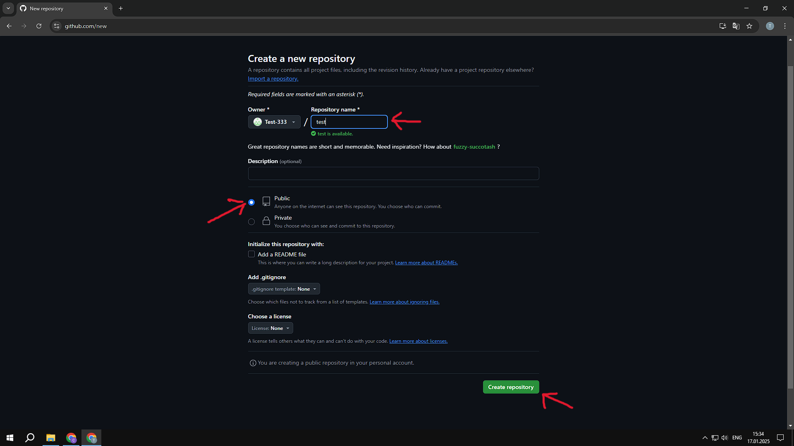№4. Нажать на ссылку "createting a new file".
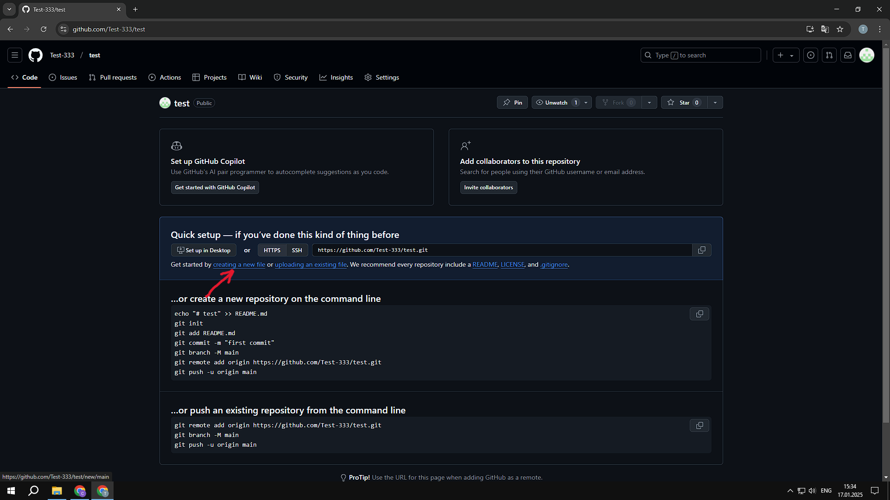№5. указать имя файла ".keep".
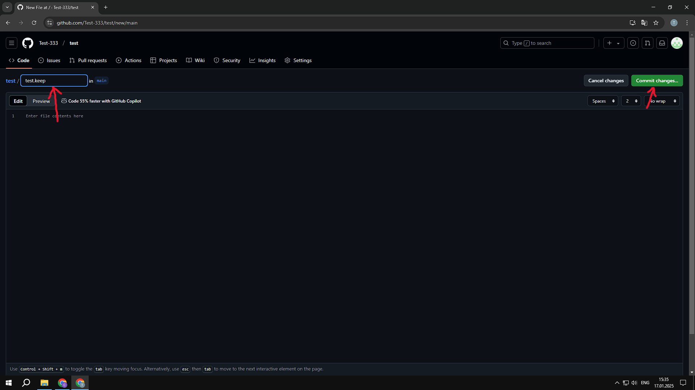№6. Подтвердить создание файла.
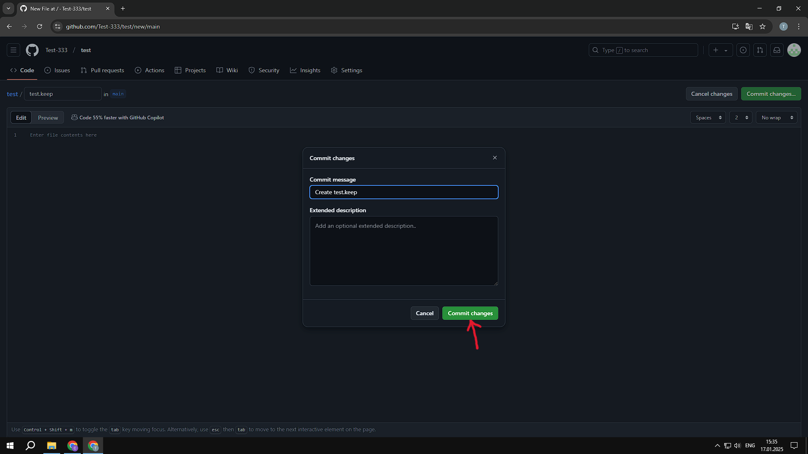№7. Перейти в настройки репозитория на страницу "Pages" и в пункте "none" указать "main".
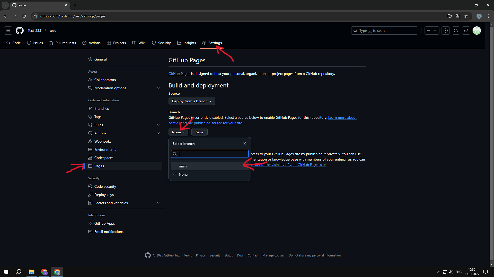№8. Сохранить.
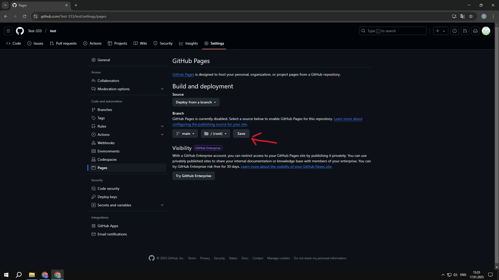№9. Обновляем до тех пор пока не появится ссылка (как в №10) может занять время до 5 минут.
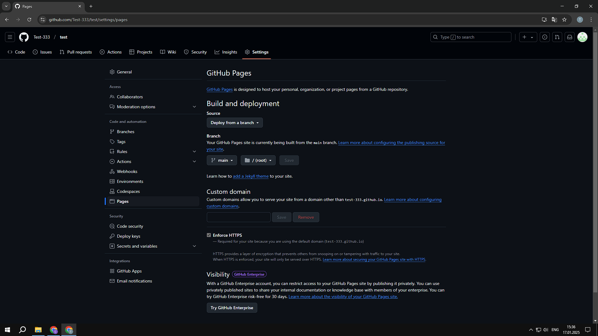№10. Копируем ссылку и сохроняем куданибудь для дальнейшей передачи пользователям. P.S. в конце ссылки нужно добавить "data_mods.json" без ковычек.
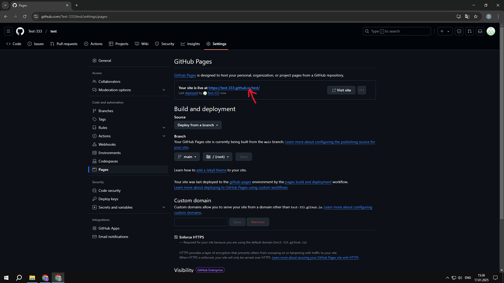№11. Далее нужно создать токен для этого переходим в профиль далее настройки.
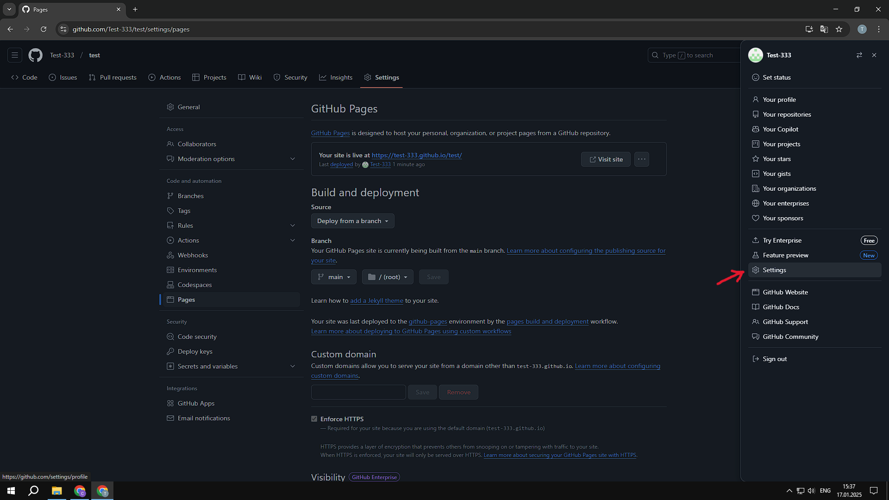№12. Выбераем "Developer settings".
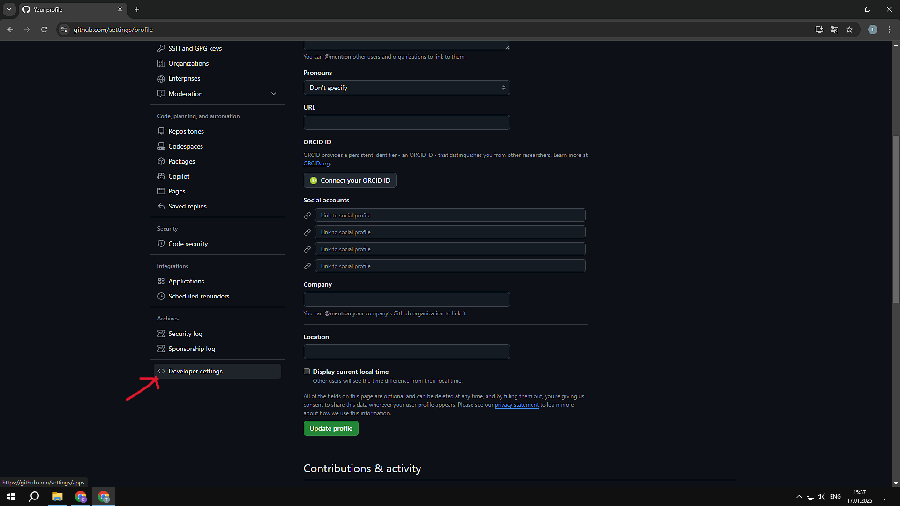№13. Выбераем "Personal access tokens" далее "Tokens (classic)" и "Generate new token (classic)".
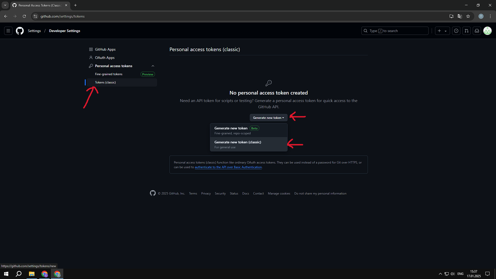№14. Вводим примечание, указываем срок действия (если указать "no experation" время действия бессконечно)
обязательно ставим галочку на против "repo", листаем в низ и подтверждаем создание токена.
№15. Копируем и сохроняем токен. ВАЖНО!!! никому не передавайте токен.
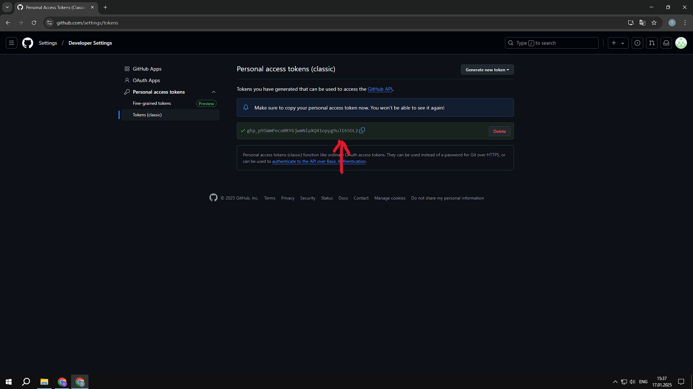№16. Скачиваем и запускаем "Tempest Launcher Github Editor" вставляем токен.
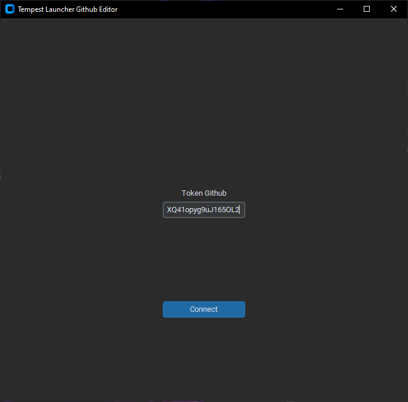№17. Выбераем репозиторий.
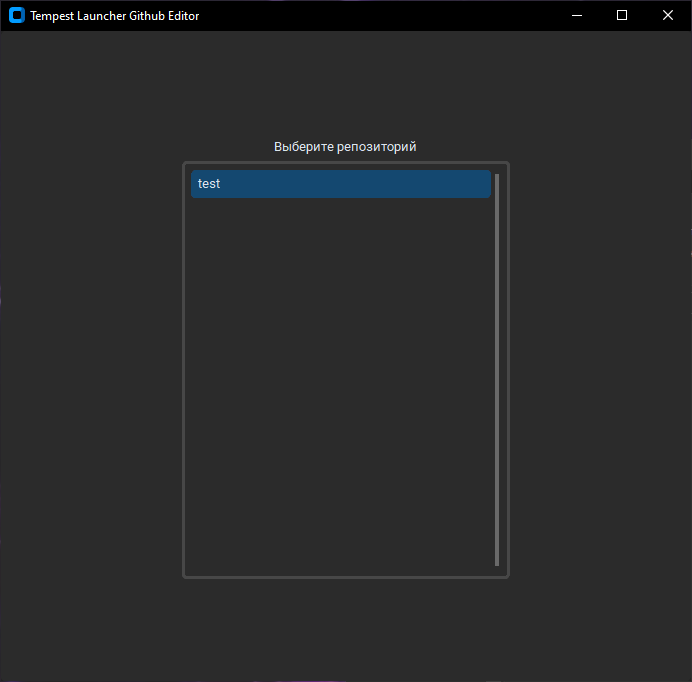№18. ВАЖНО!!!
Инструкция по загрузке файлов в гугл диск для правильной загрузки через "Tempest Launcher".
Создаем папку с названием модификации например "Redux Test" в этой папке не должно быть вложенной папки с таким или другим названием (пример на скриншоте ниже).
Далее упаковываем данную папку в ".zip" архив с паролем "Tempest".
Загружаем на гугл диск открываем доступ по ссылке ну и далее добовляем через "Tempest Launcher Github Editor".
№19. Делимся ссылкой которую копировали и изменили по пункту(№10)